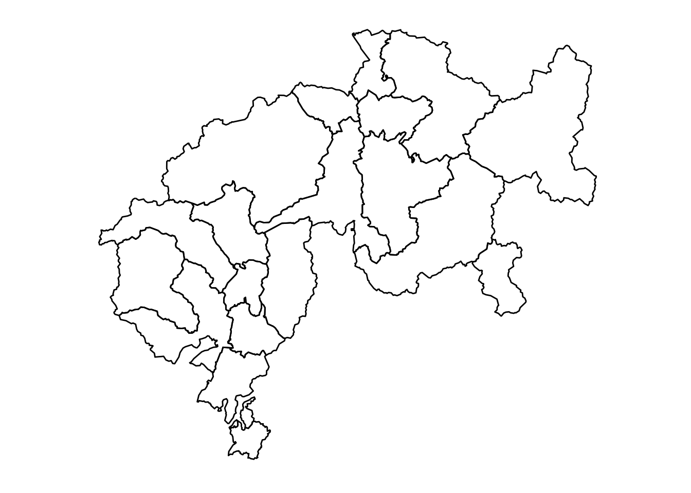

#install.packages("ggswissmaps")
suppressPackageStartupMessages(library(ggswissmaps))
suppressPackageStartupMessages(library(tidyverse))
# Data frame with the coordinates of all swiss districts
d <- shp_df[["g1b15"]]
# Look at the structure of the data frame
glimpse(d)Rows: 19,502
Columns: 21
$ long <int> 679207, 680062, 679981, 680365, 680281, 680479, 680717, 681021…
$ lat <int> 245176, 244294, 244051, 243411, 241866, 241584, 240695, 240306…
$ order <int> 1, 2, 3, 4, 5, 6, 7, 8, 9, 10, 11, 12, 13, 14, 15, 16, 17, 18,…
$ hole <lgl> FALSE, FALSE, FALSE, FALSE, FALSE, FALSE, FALSE, FALSE, FALSE,…
$ piece <fct> 1, 1, 1, 1, 1, 1, 1, 1, 1, 1, 1, 1, 1, 1, 1, 1, 1, 1, 1, 1, 1,…
$ group <fct> 0.1, 0.1, 0.1, 0.1, 0.1, 0.1, 0.1, 0.1, 0.1, 0.1, 0.1, 0.1, 0.…
$ id <chr> "0", "0", "0", "0", "0", "0", "0", "0", "0", "0", "0", "0", "0…
$ BZNR <int> 101, 101, 101, 101, 101, 101, 101, 101, 101, 101, 101, 101, 10…
$ KTNR <int> 1, 1, 1, 1, 1, 1, 1, 1, 1, 1, 1, 1, 1, 1, 1, 1, 1, 1, 1, 1, 1,…
$ GRNR <int> 4, 4, 4, 4, 4, 4, 4, 4, 4, 4, 4, 4, 4, 4, 4, 4, 4, 4, 4, 4, 4,…
$ AREA_HA <int> 11303, 11303, 11303, 11303, 11303, 11303, 11303, 11303, 11303,…
$ X_MIN <int> 671862, 671862, 671862, 671862, 671862, 671862, 671862, 671862…
$ X_MAX <int> 686462, 686462, 686462, 686462, 686462, 686462, 686462, 686462…
$ Y_MIN <int> 229137, 229137, 229137, 229137, 229137, 229137, 229137, 229137…
$ Y_MAX <int> 245396, 245396, 245396, 245396, 245396, 245396, 245396, 245396…
$ X_CNTR <int> 678300, 678300, 678300, 678300, 678300, 678300, 678300, 678300…
$ Y_CNTR <int> 235900, 235900, 235900, 235900, 235900, 235900, 235900, 235900…
$ Z_MIN <int> 380, 380, 380, 380, 380, 380, 380, 380, 380, 380, 380, 380, 38…
$ Z_MAX <int> 914, 914, 914, 914, 914, 914, 914, 914, 914, 914, 914, 914, 91…
$ Z_AVG <int> 561, 561, 561, 561, 561, 561, 561, 561, 561, 561, 561, 561, 56…
$ Z_MED <int> 557, 557, 557, 557, 557, 557, 557, 557, 557, 557, 557, 557, 55…# The cantons are identified by the KTNR column
# Extract from this data the districts of two cantons (18 = Graubünden, 21 = Ticino)
two_cantons <- d %>% filter(KTNR %in% c(18, 21))
# And draw the map
maps2_(two_cantons)